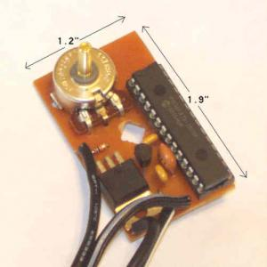

A weblog focused on interesting circuits, ideas, schematics and other information about microelectronics and microcontrollers.
E-books
Disclaimer
Because I have not tested all electronic circuits mentioned on this pages, I cannot attest to their accuracy; therefore, I do not provide a warranty of any kind and cannot be held responsible in any manner.
Microchip PIC
USocket - USB controlled Socket with PIC18F4550
10. July 2008 - 11:07 — adminThe idea of this project is to control (switch off/on) two power sockets with a computer by using its USB port.
USB Bit Whacker
8. July 2008 - 16:45 — adminAn inexpensive, simple input/output device to connect your computer to the real world by Brian Schmalz.
Electronics sthetoscope
5. July 2008 - 20:00 — adminThis project is an attempt to build a portable electronic stethoscope that selectively
amplifies body sound signals for clear auscultation by applying various digital filters
using Microchip dsPIC capabilities along with Microchip’s low noise op-amps and PGA.
Nano GPS logger
28. June 2008 - 13:19 — adminThis is a small GPS logger based on the San Jose Navigation FV-M8 GPS module that stores coordinates, altitude, and speed into an EEPROM.
LCD display for GPS module
27. June 2008 - 15:57 — adminA cool and creative way to combine the PIC Programming with the GPS LCD display.
DC motor speed control using PWM
25. June 2008 - 20:20 — adminDC motor speed control based on PIC16F867.

The circuit is using PWM with frequency about 10kHz, which does not make a noise in the motor. This project can drive motor with 1A current without heat. The motor speed is controlled by potentiometer which is connected to ADC input of PIC16F867.
LM75 Temperature Sensor
24. June 2008 - 17:59 — adminSimple LM75 temperature sensor on the breadboard
Programmable Power Supply
22. June 2008 - 14:15 — adminProgrammable power supply 0.8 - 15V with PIC micro
microSCOPE
22. June 2008 - 12:44 — adminUndoubtedly s'worlds smallest and simplest oscilloscope! An 8 pins PIC processor samples the analog input signal and generates a (PAL) video signal which shows the waveform on a normal television set.
Measuring Heart Rate
21. June 2008 - 8:34 — adminDid you know that The human heart can be measured optically. The heart beat with the varying blood pressure leads to a measurable change in the visual content of peripheral blood vessels. This is as good at the finger detect. There are two project work available, which were so far advanced that the optical signal pulse seized on a liquid crystal display graphically. Both works have been with a microcontroller PIC16C74 to collect and visualization of the signals.